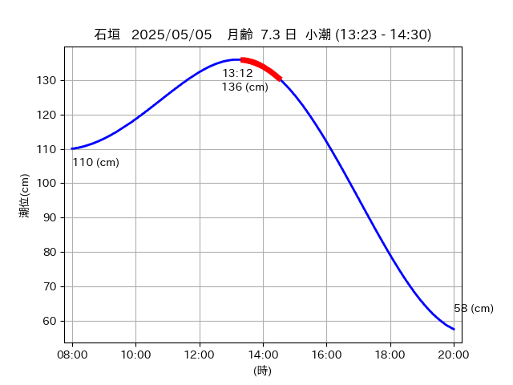

<!DOCTYPE html>
<html>
<head>
    
    <meta http-equiv="content-type" content="text/html; charset=UTF-8" />
    
        <script>
            L_NO_TOUCH = false;
            L_DISABLE_3D = false;
        </script>
    
    <style>html, body {width: 100%;height: 100%;margin: 0;padding: 0;}</style>
    <style>#map {position:absolute;top:0;bottom:0;right:0;left:0;}</style>
    <script src="https://cdn.jsdelivr.net/npm/leaflet@1.9.3/dist/leaflet.js"></script>
    <script src="https://code.jquery.com/jquery-3.7.1.min.js"></script>
    <script src="https://cdn.jsdelivr.net/npm/bootstrap@5.2.2/dist/js/bootstrap.bundle.min.js"></script>
    <script src="https://cdnjs.cloudflare.com/ajax/libs/Leaflet.awesome-markers/2.0.2/leaflet.awesome-markers.js"></script>
    <link rel="stylesheet" href="https://cdn.jsdelivr.net/npm/leaflet@1.9.3/dist/leaflet.css"/>
    <link rel="stylesheet" href="https://cdn.jsdelivr.net/npm/bootstrap@5.2.2/dist/css/bootstrap.min.css"/>
    <link rel="stylesheet" href="https://netdna.bootstrapcdn.com/bootstrap/3.0.0/css/bootstrap-glyphicons.css"/>
    <link rel="stylesheet" href="https://cdn.jsdelivr.net/npm/@fortawesome/fontawesome-free@6.2.0/css/all.min.css"/>
    <link rel="stylesheet" href="https://cdnjs.cloudflare.com/ajax/libs/Leaflet.awesome-markers/2.0.2/leaflet.awesome-markers.css"/>
    <link rel="stylesheet" href="https://cdn.jsdelivr.net/gh/python-visualization/folium/folium/templates/leaflet.awesome.rotate.min.css"/>
    
            <meta name="viewport" content="width=device-width,
                initial-scale=1.0, maximum-scale=1.0, user-scalable=no" />
            <style>
                #map_e4cd5172371c409fd61e1ce3fc62d839 {
                    position: relative;
                    width: 2048.0px;
                    height: 1600.0px;
                    left: 0.0%;
                    top: 0.0%;
                }
                .leaflet-container { font-size: 1rem; }
            </style>
        
</head>
<body>
    
    
            <div class="folium-map" id="map_e4cd5172371c409fd61e1ce3fc62d839" ></div>
        
</body>
<script>
    
    
            var map_e4cd5172371c409fd61e1ce3fc62d839 = L.map(
                "map_e4cd5172371c409fd61e1ce3fc62d839",
                {
                    center: [24.47, 123.801],
                    crs: L.CRS.EPSG3857,
                    ...{
  "zoom": 12,
  "zoomControl": true,
  "preferCanvas": false,
}

                }
            );

            

        
    
            var tile_layer_f72bfe3786ebde71ac17f0afc7a911ff = L.tileLayer(
                "https://cyberjapandata.gsi.go.jp/xyz/seamlessphoto/{z}/{x}/{y}.jpg",
                {
  "minZoom": 0,
  "maxZoom": 18,
  "maxNativeZoom": 18,
  "noWrap": false,
  "attribution": "\u5730\u7406\u9662\u5730\u56f3",
  "subdomains": "abc",
  "detectRetina": false,
  "tms": false,
  "opacity": 1,
}

            );
        
    
            tile_layer_f72bfe3786ebde71ac17f0afc7a911ff.addTo(map_e4cd5172371c409fd61e1ce3fc62d839);
        
    
            var marker_57d0880223d9e24e3ccc36015056e3ff = L.marker(
                [24.475, 123.802],
                {
}
            ).addTo(map_e4cd5172371c409fd61e1ce3fc62d839);
        
    
            var icon_e7fe47167055121d523808ea057a104a = L.AwesomeMarkers.icon(
                {
  "markerColor": "orange",
  "iconColor": "white",
  "icon": "info-sign",
  "prefix": "glyphicon",
  "extraClasses": "fa-rotate-0",
}
            );
        
    
        var popup_ce10230a8e0b147997b5eeec7ea0985a = L.popup({
  "maxWidth": "100%",
});

        
            
                var html_077d05633ba7e9e24f1d6cc1534ccea0 = $(`<div id="html_077d05633ba7e9e24f1d6cc1534ccea0" style="width: 100.0%; height: 100.0%;"><table><tr><td></td></tr><tr><td><center>20250505 No.1 </center></table></td></tr></table</div>`)[0];
                popup_ce10230a8e0b147997b5eeec7ea0985a.setContent(html_077d05633ba7e9e24f1d6cc1534ccea0);
            
        

        marker_57d0880223d9e24e3ccc36015056e3ff.bindPopup(popup_ce10230a8e0b147997b5eeec7ea0985a)
        ;

        
    
    
                marker_57d0880223d9e24e3ccc36015056e3ff.setIcon(icon_e7fe47167055121d523808ea057a104a);
            
    
            var poly_line_3deede94b353d78bdfc0ea058126e637 = L.polyline(
                [[24.475, 123.802], [24.4771, 123.8012]],
                {"bubblingMouseEvents": true, "color": "#FF00FF", "dashArray": null, "dashOffset": null, "fill": false, "fillColor": "#FF00FF", "fillOpacity": 0.2, "fillRule": "evenodd", "lineCap": "round", "lineJoin": "round", "noClip": false, "opacity": 1.0, "smoothFactor": 1.0, "stroke": true, "weight": 3}
            ).addTo(map_e4cd5172371c409fd61e1ce3fc62d839);
        
    
            var marker_8960b3b1d3964a3e7e004c3cbd4453df = L.marker(
                [24.4821, 123.8071],
                {
}
            ).addTo(map_e4cd5172371c409fd61e1ce3fc62d839);
        
    
            var icon_cc8aae5a1402ce7feeb51cb4c177c7a6 = L.AwesomeMarkers.icon(
                {
  "markerColor": "orange",
  "iconColor": "white",
  "icon": "info-sign",
  "prefix": "glyphicon",
  "extraClasses": "fa-rotate-0",
}
            );
        
    
        var popup_8b8ef3a0e73c1f4a1d1a24b953b0ccfa = L.popup({
  "maxWidth": "100%",
});

        
            
                var html_36cdb8f8c300c602b78e43f730c236cf = $(`<div id="html_36cdb8f8c300c602b78e43f730c236cf" style="width: 100.0%; height: 100.0%;"><table><tr><td></td></tr><tr><td><center>20250505 No.2 </center></table></td></tr></table</div>`)[0];
                popup_8b8ef3a0e73c1f4a1d1a24b953b0ccfa.setContent(html_36cdb8f8c300c602b78e43f730c236cf);
            
        

        marker_8960b3b1d3964a3e7e004c3cbd4453df.bindPopup(popup_8b8ef3a0e73c1f4a1d1a24b953b0ccfa)
        ;

        
    
    
                marker_8960b3b1d3964a3e7e004c3cbd4453df.setIcon(icon_cc8aae5a1402ce7feeb51cb4c177c7a6);
            
    
            var poly_line_567afae5182d973109db07e743ac2c1e = L.polyline(
                [[24.4821, 123.8071], [24.483, 123.8041]],
                {"bubblingMouseEvents": true, "color": "#FF00FF", "dashArray": null, "dashOffset": null, "fill": false, "fillColor": "#FF00FF", "fillOpacity": 0.2, "fillRule": "evenodd", "lineCap": "round", "lineJoin": "round", "noClip": false, "opacity": 1.0, "smoothFactor": 1.0, "stroke": true, "weight": 3}
            ).addTo(map_e4cd5172371c409fd61e1ce3fc62d839);
        
    
            var marker_21ffa119801370e8e29566ba89e3ec32 = L.marker(
                [24.4794, 123.8029],
                {
}
            ).addTo(map_e4cd5172371c409fd61e1ce3fc62d839);
        
    
            var icon_c40683b2e26ea89ab1132abcdf6d7e7e = L.AwesomeMarkers.icon(
                {
  "markerColor": "orange",
  "iconColor": "white",
  "icon": "info-sign",
  "prefix": "glyphicon",
  "extraClasses": "fa-rotate-0",
}
            );
        
    
        var popup_11f5667075ae53b35a0bce43346c4ca8 = L.popup({
  "maxWidth": "100%",
});

        
            
                var html_a22dfdcfd8664a01c46532b08023522e = $(`<div id="html_a22dfdcfd8664a01c46532b08023522e" style="width: 100.0%; height: 100.0%;"><table><tr><td></td></tr><tr><td><center>20250505 No.3 </center></table></td></tr></table</div>`)[0];
                popup_11f5667075ae53b35a0bce43346c4ca8.setContent(html_a22dfdcfd8664a01c46532b08023522e);
            
        

        marker_21ffa119801370e8e29566ba89e3ec32.bindPopup(popup_11f5667075ae53b35a0bce43346c4ca8)
        ;

        
    
    
                marker_21ffa119801370e8e29566ba89e3ec32.setIcon(icon_c40683b2e26ea89ab1132abcdf6d7e7e);
            
    
            var poly_line_8e4c842850607763930d857c73f074f6 = L.polyline(
                [[24.4794, 123.8029], [24.4775, 123.8017]],
                {"bubblingMouseEvents": true, "color": "#00FFFF", "dashArray": null, "dashOffset": null, "fill": false, "fillColor": "#00FFFF", "fillOpacity": 0.2, "fillRule": "evenodd", "lineCap": "round", "lineJoin": "round", "noClip": false, "opacity": 1.0, "smoothFactor": 1.0, "stroke": true, "weight": 3}
            ).addTo(map_e4cd5172371c409fd61e1ce3fc62d839);
        
    
            var marker_62da2d1fe7d0a22ccb44f66b78600173 = L.marker(
                [24.4676, 123.8008],
                {
}
            ).addTo(map_e4cd5172371c409fd61e1ce3fc62d839);
        
    
            var icon_e3b3dff73a12f3a3ce9c9b8c1dffe6f0 = L.AwesomeMarkers.icon(
                {
  "markerColor": "orange",
  "iconColor": "white",
  "icon": "info-sign",
  "prefix": "glyphicon",
  "extraClasses": "fa-rotate-0",
}
            );
        
    
        var popup_f1d3b0fbd2eee65833f2417cc5163b03 = L.popup({
  "maxWidth": "100%",
});

        
            
                var html_05a71a38725f29120854d73a13d513d9 = $(`<div id="html_05a71a38725f29120854d73a13d513d9" style="width: 100.0%; height: 100.0%;"><table><tr><td></td></tr><tr><td><center>20250505 No.4 </center></table></td></tr></table</div>`)[0];
                popup_f1d3b0fbd2eee65833f2417cc5163b03.setContent(html_05a71a38725f29120854d73a13d513d9);
            
        

        marker_62da2d1fe7d0a22ccb44f66b78600173.bindPopup(popup_f1d3b0fbd2eee65833f2417cc5163b03)
        ;

        
    
    
                marker_62da2d1fe7d0a22ccb44f66b78600173.setIcon(icon_e3b3dff73a12f3a3ce9c9b8c1dffe6f0);
            
    
            var poly_line_ae4dd6a6c0c701d19f2223b250074a79 = L.polyline(
                [[24.4676, 123.8008], [24.4728, 123.8015]],
                {"bubblingMouseEvents": true, "color": "#FF00FF", "dashArray": null, "dashOffset": null, "fill": false, "fillColor": "#FF00FF", "fillOpacity": 0.2, "fillRule": "evenodd", "lineCap": "round", "lineJoin": "round", "noClip": false, "opacity": 1.0, "smoothFactor": 1.0, "stroke": true, "weight": 3}
            ).addTo(map_e4cd5172371c409fd61e1ce3fc62d839);
        
</script>
</html>